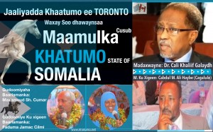

khatumo.net archive
The Pioneers of Khatumo Freedom
Published without a byline
August 25, 2014

The people of Khatumo State have weathered many difficult and painful situations and challenges externally imposed by the secessionist Isaq clan. Despite the gross human rights violations and brutal oppression unleashed by the secessionist Isaq clanand the other challenges and setbacks engendered by the natural phenomenon of the struggle the former Executive Committee of Khatumo State (G10) members had re-energized the struggle with zeal, dedication, perseverance and sacrifice. They are the freedom heroes who led our way to liberate the SSC regions of Khatumo State from the yoke of Isaq clan and they deserve the recognition and the respect of all Khatumites.As Khatumites, we have a moral duty and obligation to recognize and value them as the pioneers of our present day accomplishments. We have to remember the tough decisions, painful trauma and patience in long hours of hard work they have endured since the Consultative Conference of 2011 which itself was their initiation. No matter how complex was a situation or a problem, the Executive Committee of Khatumo State(G10) has demonstrated an viable ability to find a reasonable and constructive solution to continue moving forward to the noble cause of freedom and dignity. Since the beginning of our struggle in 2011 at the Consultative Conference in London, The then G6 team and later G11 have made a tremendous sacrifice in inspiring Khatumites with innovative thinking, humility, openness, integrity, dedication, sound leadership and unifying vision in leading the way to our historic success of today.
We, As Khatumites, have been privileged to witness so many crucial moments of their courage, commitment and Khatumo spirit which led their arduous and challenging path towards freedom. They have made an indelible imprint in the history of promoting our goals and ideals. Despite multitude of pressures and dangerous moments from our enemies, their personal devotion to freedom and dignity of the SSC people of Khatumo State is accomplished.
Today the struggle for freedom and dignity for the SSC regions of Khatumo State have taken great strides to unprecedented success over the Isaq Clan tyranny and oppression. After a very short but difficult number of years in which khatumites have sacrificed precious blood and sweat, we have installed a democratically elected Khatumo government. Thanks to ALLAH and to former Executive Committee of Khatumo State(G10).
The true sons and daughters of Khatumo State are well-aware of the personal and collective contributions of our former Executive Committee to the noble cause. The selfless service they offered without complaint will last far longer than their lives. They are ordinary people who made themselves extraordinary. All Khatumites should pay tribute to our living heroes who have made their mark in our history for freedom.
On another note, reminiscing, remembering and honoring those Khatumites who paid the ultimate price for our freedom and dignity is a paramount elevation and blessing for their souls and for ours as well. Each time we recall the courage and patriotism of these individuals, each time we re-energize and rededicate ourselves to the cause andto the ideals they so fervently cherished, defended and died for.
Today, let us remember each and every one of the hundreds who lost their lives in order to achieve freedom for all khatumites. May Allah bless their souls and reward them with the highest status of his paradise. Among the notables, is the late Dr. Mohamed Burale Farah a former G6 member of the Executive Committee of Khatumo State who dedicated his life for the SSC people since the beginning of the Consultative Conference in London-UK.
The debt of gratitude toward the former Executive Committee of Khatumo State (G10) can be paid back only through Khatumites’ devotion to liberate our capital city LasAnod and to securing and preserving the freedom and dignity of the SSC people of Khatumo State of Somalia. The more we appreciate and are thankful of the sacrificial deeds of our heroes and heroines (both living and dead), the more we are dignified and respected. Let us pray for ALLAH’s continued favor on Khatumo State of Somalia and its people. Let us also pray for ALLAH’S strength and guidance in our efforts to advance the ideals of freedom, justice and human dignity for our people.
Khatumo Forum for Peace, Unity and Development
A photograph published with this piece could not be recovered — the Internet Archive never captured it.